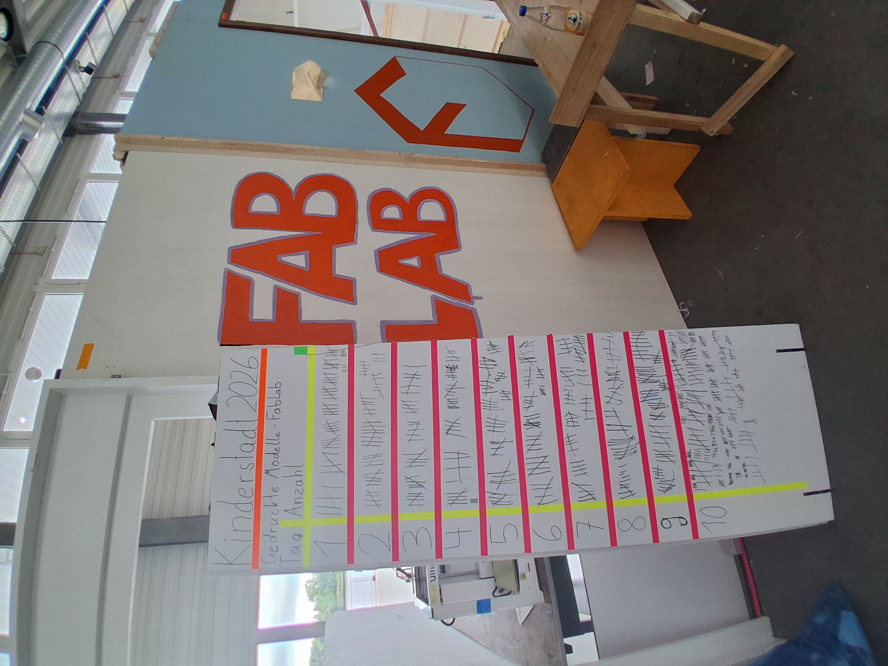
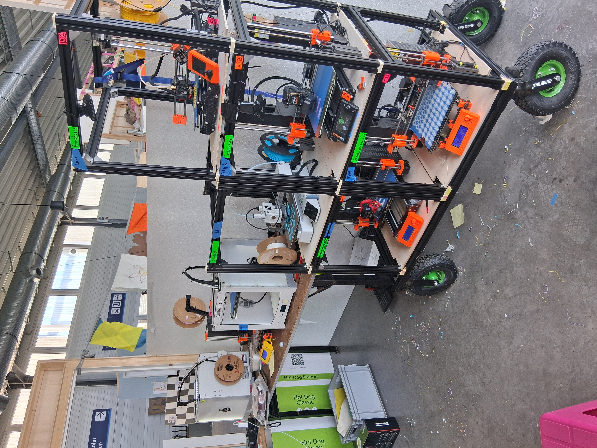

Kinderstadt
This summer (2026), as well as in2024, I led the FabLab Station independently. For two weeks, I supervised and taught kids as well as adolescents between the ages of seven and fifteen CAD and 3-D Printers. There I maintained 8 3D-printers in order to print over 750 models in total.

FILE: kinderstadt_outside.jpg
TYPE: JPG
TYPE: JPG

FILE: kinderstadt_inside.jpg
TYPE: JPG
TYPE: JPG